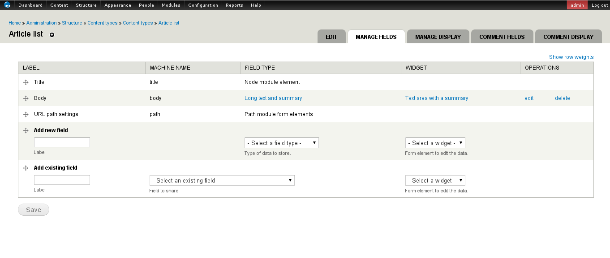
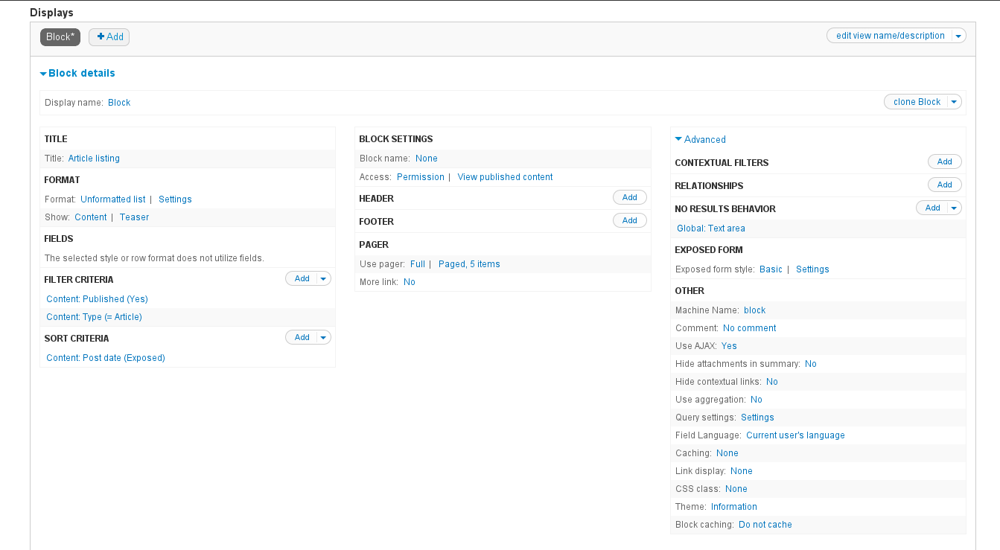
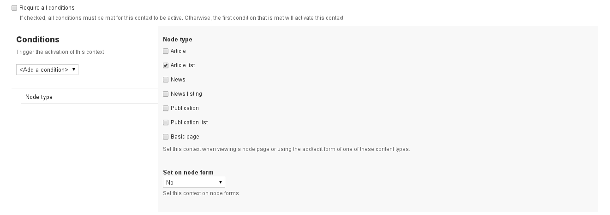
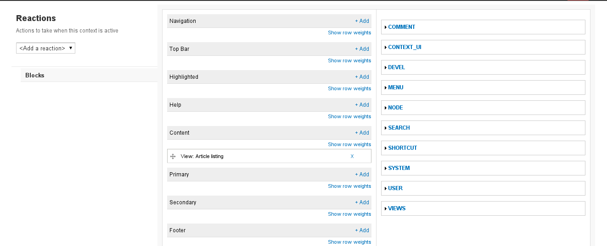
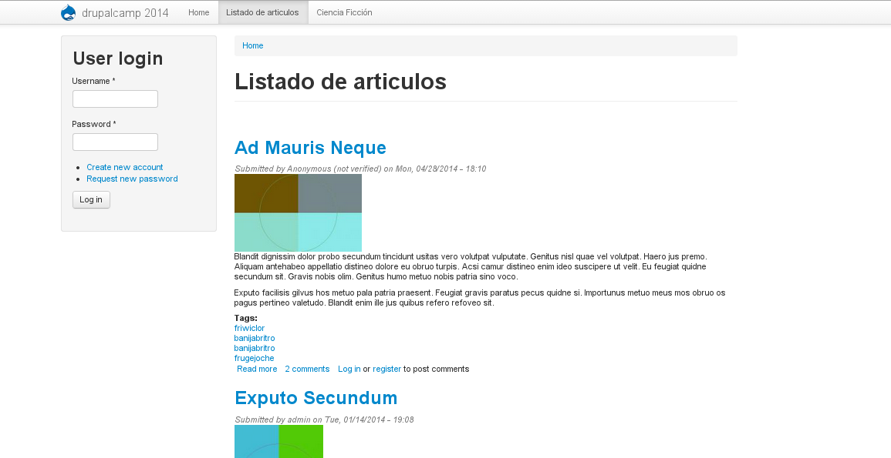
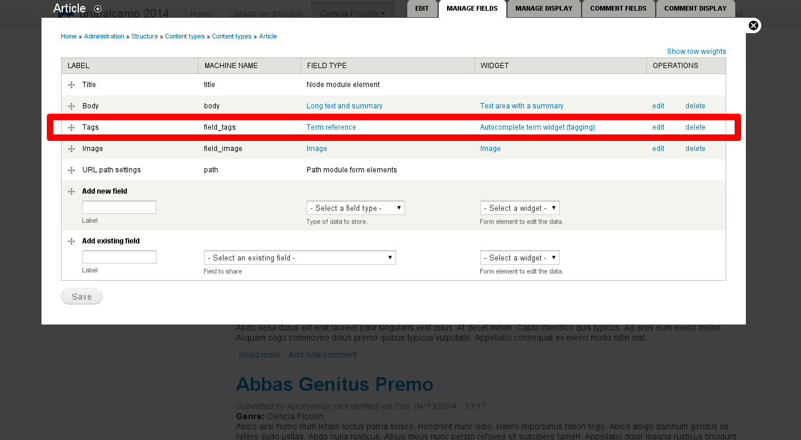
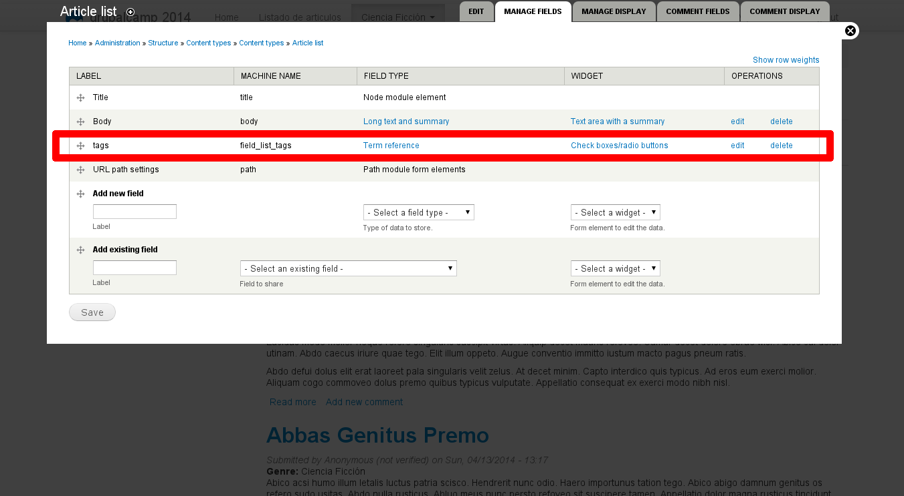

Carlos Carrascal - @ccarrascal77
[ ccarrascal@indra.es ]
[ carlos.carrascal@gmail.com ]
Carlos Carrascal Sánchez
@ccarrascal77
[ ccarrascal@indra.es ]
[ carlos.carrascal@gmail.com ]
[ http://www.carloscarrascal.com ]
Soy responsable de desarrollo con Drupal en Indra, en el departamento de Omnicanalidad.
Llevo trabajando en informática desde 1998, en varias consultoras:
Siempre he trabajado en temas relacionados con la web, gestión documental, portales, etc.
Enfocar el desarrollo a la explotación del producto.
Pero además:
Cada proyecto es un mundo.
No siempre podremos hacer las cosas y trabajar como nos gustaría.
Tendremos unos presupuestos distintos, requisitos, etapas, tiempos de ejecución, etc.
El factor mas importante de éxito en nuestro trabajo será que nuestros productos sean usables.
Pretendemos desarrollar una solución lo mas genérica posible, a partir de la cual se pueda construir lo que el cliente necesita, en vez de limitarnos a construir literalmente lo que el cliente nos está pidiendo, que en muchos casos ni siquiera será lo que realmente quiere.
De esta forma, esperamos que nuestro producto será realmente usable en el día a día. Se podrá trabajar con el, extenderlo, modificarlo...
Siempre dentro de lo razonable. Y de nuestro presupuesto
Vamos a implementar un sistema para conseguir que nuestros editores de contenido, sin conocimientos técnicos, sean capaces de crear listados en sus portales de forma sencilla e intuitiva, igual que gestionan el resto de sus contenidos, y además aplicarles cierta personalización.
En palabras mas técnicas:
Usaremos nodos para mostrar listados de otros nodos, estableciendo filtros por tipo de contenido, por términos de taxonomía, o por valores de los campos esos nodos.
Mediante los siguientes componentes:
Necesitaremos una instalación de Drupal 7 con los siguientes módulos:
Entre las ventajas que podemos destacar de esta forma de implementar listados tenemos:
Existe un módulo que hace básicamente lo mismo que vamos a hacer aquí a mano.
Merece la pena probarlo si necesitamos algo sencillo, pero para un proyecto grande, hacerlo a mano nos permitirá controlar completamente las funcionalidades que queramos presentar al usuario.
En Drupal hay dos funcionalidades básicas para la presentación de contenidos:
Tradicionalmente, se suele manejar y desarrollar de forma separada la presentación de los contenidos, y de sus listados.
La configuración de las vistas suele ser demasiado compleja para un usuario sin conocimientos técnicos.
Vamos a intentar facilitar la tarea de gestión del contenido, permitiendo a los editores crear listados simplemente creando un nodo de un tipo especial, que mostrará un listado de forma automática.
Lo primero será crear el tipo de contenido que queremos listar.
Para nuestro ejemplo podemos utilizar el Article, de la instalación por defecto de Drupal.
Configuraremos los campos que necesitemos dependiendo de nuestras necesidades.
De momento no hay nada especial que debamos tener en cuenta para este tipo de contenido.
Si estamos usando Display Suite, configuraremos al menos los modos:
Este es el tipo de contenido que efectivamente creará el listado. Por ejemplo, si vamos a listar Articulos, podemos llamarlo "Listado de Artículos".
De momento no necesitamos añadir ningún campo especial a este tipo de contenido. Podemos incluir o no un campo Body, dependiendo si queremos que nuestros listados muestren texto, por ejemplo.
Ejemplo:
Tipo de contenido Listado de Artículos con campos por defecto.
Si estamos usando Display Suite, solo necesitaremos el modo Default o Full content, para la vista completa de nodo.
Es recomendable desactivar la opción de "Mostrar en la página de incio".
Ahora crearemos la vista que usaremos para listar, siguiendo nuestro ejemplo, los nodos de tipo Artículo.
Vista de tipo bloque para el tipo de contenido Artículo.
Por último, el contexto que usaremos como punto de unión entre vista y nodo de listado.
Condiciones del contexto para asociar la vista al tipo de contenido Listado de Artículos.
Reacciones del contexto para asociar la vista al tipo de contenido Listado de Artículos.
Ahora cada vez que se acceda a un nodo de tipo Listado de Artículos, nuestro nuevo contexto se encargará de pintar la vista de bloque en la región que queramos. Si nuestro tema de presentación dispone de una región Content bottom, podremos tener nuestro listado debajo de un bloque de texto.
Listado de nodos tipo Article
Para poder establecer un primer filtro sobre nuestros listados, vamos a crear una taxonomía.
Incluiremos referencias a términos tanto en los contenidos a listar, como en los nodos que hacen de listado.
Vamos a usar la taxonomía por defecto Tags.
Vamos a incluir un campo de tipo Term reference en el tipo de contenido Article, para poderlos filtrar cuando los listemos.
Podemos configurar el campo con valor único o multivalor, con checks o autocompletar, etc.
No hay ningún misterio en añadir un campo a un tipo de contenido.
Incluimos también un campo de tipo Term reference en el tipo de contenido Listado de artículos, para tener un criterio con el que filtrar.
Aqui también podemos configurar el campo con valor único o multivalor, con checks o autocompletar, etc.
Tampoco hay aquí ningun misterio, ya hemos visto mas campos como estos.
Vamos a añadir a la vista que hemos creado un Filtro contextual de tipo Content: Has taxonomy term ID.
Este filtro relacionará el campo de los nodos a listar con el campo del listado que estamos viendo.
Este tipo de filtros se hacen llegar a la vista como un parámetro en la llamada, cuando la vista es de tipo page, por ejemplo.
En este caso, el truco consiste en especificar un comportamiento para cuando no dispongamos de valor para el, asignándole un valor por defecto.
Con la opción de Taxonomy term ID from URL, y marcando Load default filter from node page, le indicamos al filtro que debe buscar el valor en el nodo que estamos visualizando, es decir, el valor del campo Tags del listado que queremos mostrar.
Podemos limitar el filtro por vocabulario, marcando los que nos interesen de los existentes.
Otra opción interesante que afectará a los resultados del listado es si utilizará una condición AND o un OR cuando tengamos múltiples terminos para filtrar en el listado.
Por último podemos configurar un valor como excepción para saltarnos el filtro. Cuando la vista reciba este valor, dejara de aplicar el filtro contextual, forzando a sacar todos los resultados.
Para el caso de términos de taxonomía, necesitaremos indicar el id del término.
La siguiente pantalla es una lista de articulos que se obtiene filtrando por un valor de termino de taxonomía.
Cuando utilizamos este enfoque para listar también podemos exponer los filtros de la vista que hemos creado, y se aplicarán sobre los resultados ademas del filtro contextual, sin ningún problema.
Al estar usando una visualización de bloque en la vista, para que funcionen correctamtente los filtros expuestos tendremos que activar la opción de usar AJAX, en la sección de Advanced / Others de la vista.
Establecemos un filtro de la forma habitual, del tipo que necesitemos: fechas, texto, campo, etc.
Lo exponemos al usario. Podemos usar Single, Grouped y cualquier combinación de valores que necesitemos.
Al igual que pasa con los filtros expuestos, también podemos exponer los criterios de orden del listado de la forma habitual, y permitir que el usuario los modifique.
En este listado se puede ver el formulario expuesto con los filtros y orden para que el usuario los utilize.
Ahora que tenemos filtros expuestos en nuestros listados, podemos añadir algo de lógica para ir un poco más allá.
Una posibilidad interesante es permitir al editor de contenidos seleccionar que filtros o que criterios de ordenación quiere exponer, de entre aquellos que tengamos configurados en la vista.
Para ello, podemos añadir algunos campos a nuestro tipo de contenido Listado de artículos mediante los que controlaremos el funcionamiento de los filtros.
Usaremos un campo de tipo Boolean por cada filtro o criterio de orden que necesitemos activar o desactivar.
Deberíamos utilizar Features siempre, pero en este caso lo haremos para:
A continuación se muestra un ejemplo de los componente del listado incluidos en una Feature.
Vamos a usar un hook para alterar el formulario de los filtros expuestos y ocultar los que correspondan, en función de los que tengamos seleccionados en el nodo del listado.
Podemos implementar hook_form_FORM_ID_alter. En nuestro código necesitaremos acceder a la información del nodo actual, y la forma mas sencilla es un node_load.
A continuación se muestra un ejemplo de implementación de lo que queremos hacer.
function cc_publication_form_views_exposed_form_alter(&$form, &$form_state) {
if ( $form['#id'] == "views-exposed-form-publication-list-block" ) {
$node = node_load(arg(1));
if ( $node->field_pl_expose_order['und'][0]['value'] == 1 ) {
$form['sort_order']['#title'] = 'Sort by' ;
} else {
$form['sort_order']['#title'] = '' ;
$form['sort_order']['#type'] = 'hidden' ;
}
if ( $node->field_pl_expose_author['und'][0]['value'] == 1 ) {
$form['field_pub_author_tid']['#title'] = t('Author') ;
} else {
$form['field_pub_author_tid']['#type'] = 'hidden';
$form['field_pub_author_tid']['#title'] = '';
$form['field_pub_author_tid']['#value'] = array() ; // Ponemos un array para la seleccion multiple
}
$form['sort_by']['#title'] = '' ;
$form['sort_by']['#type'] = 'hidden' ;
}
}
Ignacio Sánchez Holgueras
Carles Saport
José María Carnicero
David Bernal
Carlos Carrascal - @ccarrascal77
[ ccarrascal@indra.es ]
[ carlos.carrascal@gmail.com ]
[ @ccarrascal77 ]
Repositorio de GitHub
https://github.com/ccarrascal/drupalcamp2014
{kind=link}
{kind=link}
{kind=link}
{kind=link}
{kind=link}
{kind=link}
{kind=link}